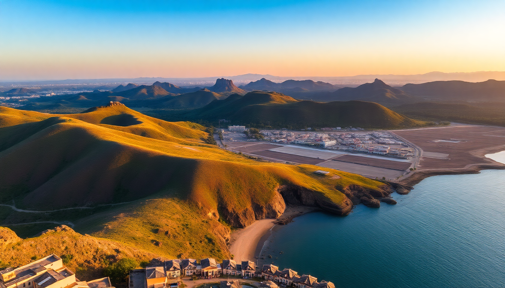

Best Day Trips from Cartagena: Islands, Mud & City Vibes

I spent a week in Cartagena and quickly realized the walled city is just the appetizer. The real meals are the day trips out of town — each one completely different from the last. Here’s what worked, what didn’t, and exactly how to plan three solid day trips without getting fleeced.
Is the Rosario Islands day trip worth the hype?
Yes, but only if you pick the right boat. The Rosario Islands are a 45-minute speedboat ride from Cartagena’s Muelle de la Bodeguita. The water is that unreal Caribbean turquoise you see on postcards.
I booked a shared boat tour through a local agency near the Clock Tower for 90,000 COP (about $22). That got me transport, lunch, and a few hours at Playa Blanca on Isla Barú. The beach itself is packed with vendors selling ceviche and massages — it’s not deserted paradise. But the snorkeling at Isla Grande was genuinely good. I saw starfish, parrotfish, and a small reef without needing to swim far.
- Isla Grande — quieter beaches, better snorkeling, fewer touts
- Playa Blanca — pretty sand but crowded by 11 a.m.; go early or skip it
- Isla Cholón — party island with loud music and floating bars; skip if you want calm
- Bora Bora Beach Club — day pass with pool and loungers; costs 50,000 COP entry but includes a drink
If you can afford it, a private boat (around 400,000 COP for two people) lets you hit three islands in five hours and avoid the crowds. I’d do that next time.
How do you get to the Totumo Mud Volcano without a tour?
The Volcán de Lodo El Totumo is an hour’s drive north of Cartagena. It’s basically a small mud pit in a cone where you float in warm, dense gray mud. Sounds weird. It is weird. And it’s a lot of fun.
Tours from Cartagena run around 60,000–80,000 COP and include transport, entry, and a guide. But I rented a car with a friend and drove ourselves. The road is straight and paved until the last 2 km of dirt track — fine in a sedan. Entry at the gate was 25,000 COP per person.
- Totumo Mud Volcano — the only real volcano here; climb the ladder, slide in, float for 20 minutes
- Local women — they wash you off in the lake afterward with buckets; tip them 5,000–10,000 COP
- Cabañas Totumo — basic changing rooms and lockers; bring a towel and a plastic bag for muddy clothes
- Lunch at Restaurante Totumo Beach — fried fish and patacones on the nearby lakeshore; decent but nothing special
The mud is said to have minerals good for your skin. My skin felt fine. Mostly I just laughed at how ridiculous it was to be floating in a hole with strangers. Go early (8 a.m.) to avoid the midday tour bus crowds.
Can you explore Getsemani on foot in half a day?
Absolutely. Getsemani is Cartagena’s gritty-cool neighbor just outside the walled city. Ten years ago it was sketchy. Now it’s the neighborhood where artists, backpackers, and good ceviche shops coexist. I walked it in about three hours, including stops for coffee and photos.
Start at Plaza de la Trinidad. It’s the heart of Getsemani — a square with a church, a few food carts, and locals playing dominoes in the afternoon. From there, wander the side streets. Every wall is covered in street art. Callejón Angosto is an alley so narrow you can touch both sides at once. Calle de la Sierpe has a massive mural of a woman’s face that’s become an Instagram spot.
- Plaza de la Trinidad — main square; best vibe after 5 p.m. when the food stalls open
- Callejón Angosto — narrowest street in Cartagena; photo op but quick
- Calle de la Sierpe — street art corridor with huge murals
- Café de la Mañana — solid coffee and arepas for 8,000 COP
- La Cevichería — famous ceviche spot (Anthony Bourdain ate here); expect a line at lunch
- Demente Tapas Bar — rooftop terrace with views of the city; good for a sunset beer
I skipped the guided street art tour. The neighborhood is small and safe enough to explore alone. Just keep your phone in your pocket and your bag zipped — standard city stuff.
What’s the best time of year for these day trips?
December to March is dry season in Cartagena. That’s also peak tourist season — prices are higher and beaches are fuller. I went in late January and had blue skies every day, but Playa Blanca felt like a mall parking lot by noon.
April to June is the shoulder season. You get fewer crowds and slightly lower tour prices, but you might catch a brief afternoon shower. I’d pick May if I had to choose again. The water is still warm, and the islands were half-empty.
- December–March — best weather, worst crowds; book tours two days ahead
- April–June — good compromise; rain usually passes in 30 minutes
- July–November — rainy season; the mud volcano is still fine, but boat trips to the islands get canceled on rough days
Check the marine forecast before booking a Rosario trip in any month. If the wind is high, the boat ride gets choppy and some operators cancel.
How do you get around Cartagena without getting scammed?
Taxis in Cartagena don’t use meters. You negotiate the price before getting in. From the airport to the walled city, expect 20,000–30,000 COP. Within the historic center, any ride should be under 10,000 COP. Uber works but drivers sometimes ask you to cancel and pay cash — I just used official taxis from hotel concierges.
For the mud volcano, a taxi round-trip from Cartagena costs about 150,000 COP including waiting time. That’s cheaper than two tour tickets if you’re in a group of three or four.
- Uber — available but legally gray; drivers prefer cash
- Official taxis — line up at hotels and malls; agree on price before getting in
- Local buses — minibuses called “busetas” run to Totumo for 10,000 COP; crowded but cheap
- Rental car — I used Localiza near the airport; 80,000 COP per day for a basic hatchback
Walking is the best option inside Getsemani and the walled city. Everything is close, and you’ll see more on foot.
FAQ
Is the mud volcano safe for kids? Yes, kids as young as three can go in. The mud is shallow (about chest-deep for an adult) and buoyant. Just watch their eyes — the mud stings if it gets in. Bring goggles if you’re worried. The women who wash you off are gentle and quick.
Can you do both the Rosario Islands and the mud volcano in one day? Technically yes, but I wouldn’t. The islands need a full morning and the volcano is a 2-hour round trip from Cartagena. You’d be rushing both. Pick one per day. If you only have one free day, choose the islands for the water experience or the volcano for the novelty.
Do I need a tour for Getsemani? No. The neighborhood is small, safe, and easy to navigate with Google Maps. A tour adds context about the street art and history, but you can get the same info from a blog post or a 5-minute Wikipedia read. Save the money for ceviche.
Conclusion
- Rosario Islands — best for snorkeling and beach time; avoid Playa Blanca peak hours; book a private boat if your budget allows
- Totumo Mud Volcano — weird, fun, and worth the drive; go early or late to skip crowds; tip the washer women
- Getsemani — the real Cartagena; walkable in half a day; start at Plaza de la Trinidad and follow the murals
- Timing — May or September for decent weather and half the tourists
- Getting around — negotiate taxi fares upfront; rent a car for the volcano if you’re in a group